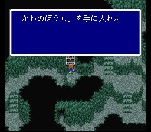

해적의 아지트
북쪽으로 계속 가다보면 동굴이 있습니다. 일행은 보코를 남겨두고 동굴로
들어갑니다. 이곳의 적들은 밧슈가 차고 있는 브로드소드로는 한방에 죽지만 나이프나
맨손으로는 한방에 안 죽으므로 조금은 HP가 닳을 수도 있습니다. 그래도 회복의
샘도 있고, 회복 안해도 아지트 도착 때까지 죽는 멤버는 없을 겁니다.

진행하다보면 해적선이 바람도 없이 움직이는 것을 목격하고, 한 해적이 아지트의 입구를 작동시키는 것을 확인한 후 아지트에 잠입합니다. 바람의 신전에 도착하려면 배의 도움이 없이는 안되는 상황.. 가라프는 해적선에 몰래 타는 것을 제안하고, 무모하지만 달리 방법이 없어 보입니다.
일행은 해적선에 잠입하여 배의 작동을 시도하지만, 어떻게 움직이는지도 모르는 채 해적들에게 잡히고 맙니다. 여기서 레나의 신분(타이쿤의 왕녀)이 밝혀지고, 해적두목인 파리스는 그들을 감금해 두지만.. 레나가 자신과 같은 펜던트를 하고 있는 것을 본 파리스는 무슨 생각인지 일행을 도와주기로 합니다.
배는 파리스의 친구인 실드라라는 괴수에 의해 조종되므로 바람 없이 갈
수 있습니다. 이제 항해를 시작하면, 한 해적이 바람의 신전까지 자동으로 조종해
주겠다고 하는데 이는 방향치인 플레이어를 위한 배려로 보입니다. 마음대로 하셔도
됩니다.
다만, 바람의 신전에 가기 전에 서쪽에 있는 툴 마을에 잠시 들를
수 있습니다. 어차피 나중에 오게 되겠지만 들르는 것도 나쁘지는 않습니다.